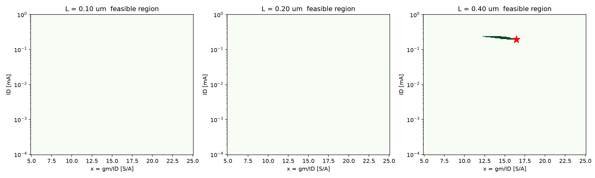
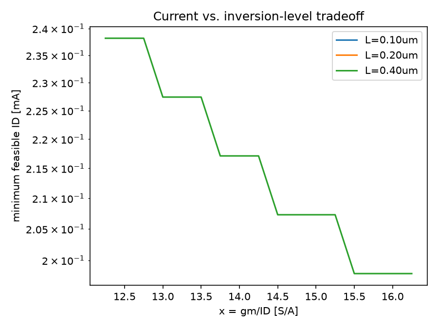
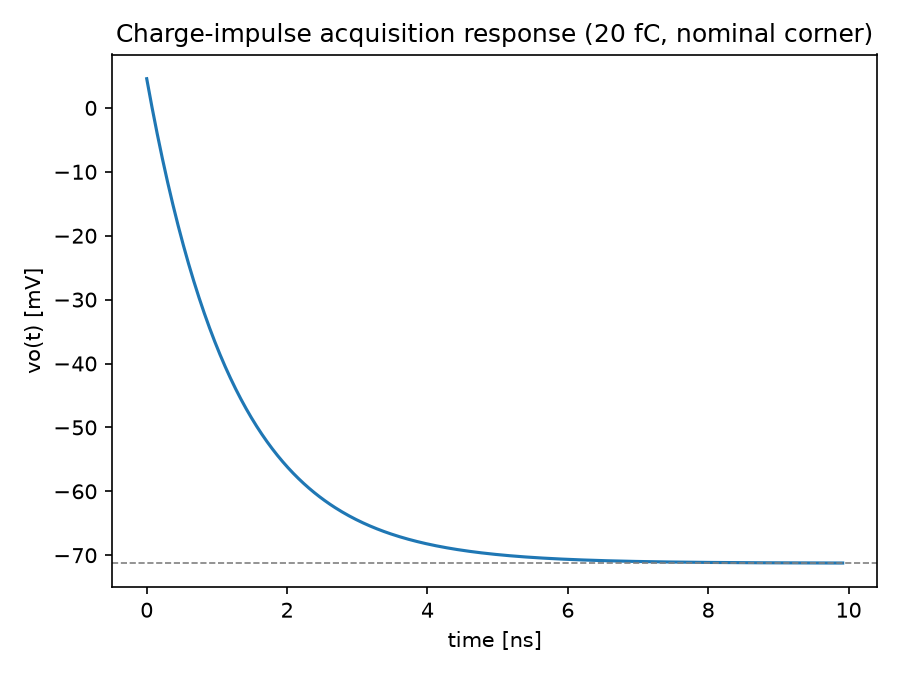

Circuit: common-source NMOS M1 (source, bulk grounded), ideal DC current-source load, feedback capacitor $C_F$ from drain ($v_o$) to gate ($v_g$), sensor capacitance $C_S$ at the gate, bias servo (ac-open 1–100 MHz), load cap $C_B$ at the output. $V_{DD}=1.2\text{ V}$, output bias $0.60\text{ V}$.
$C_x = C_F + C_{gd}$, $\ C_i = C_S + C_{gs} + C_x$, $\ C_o = C_B + C_{db} + C_x$
$$sC_i v_g - sC_x v_o = i_S \qquad\qquad (g - sC_x)v_g + (g_o + sC_o)v_o = 0$$
Eliminating $v_g$ and collecting terms gives a single real pole and a single right-half-plane (RHP) zero:
$$Z_T(s) = \frac{sC_x - g}{s\left[(C_xg + C_ig_o) + s(C_iC_o - C_x^2)\right]}$$
Define $A_1 = C_xg + C_ig_o$, $\ A_2 = C_iC_o - C_x^2$, $\ \omega_p = A_1/A_2$ (LHP pole), $\ \omega_z = g/C_x$ (RHP zero):
$$Z_T(s) = \frac{1}{A_1}\left[\frac{-g}{s} + \frac{C_x + g/\omega_p}{1+s/\omega_p}\right]$$
$Z_T(s)$ has a pole at the origin — physically correct: a current impulse delivers a fixed charge that the capacitor network integrates into a permanent voltage step (no decay back to 0).
The factor of $s$ in $H(s)$ exactly cancels the $1/s$ pole of $Z_T(s)$, so $H(s)$ is a proper (no pole-at-origin) single-pole/single-zero function:
$$\boxed{H(s) = \frac{H_0\,(1 - s/\omega_z)}{1+s/\omega_p}}\qquad H_0 = \frac{C_F\,g}{C_x g + C_i g_o} = \frac{C_F g}{A_1}$$
$H_0<1$ because this is a single-transistor pseudo-virtual-ground amplifier (finite $g$), not an infinite-gain op amp — it quantifies how close the real charge gain comes to the ideal $1/C_F$ (i.e. $v_o(\infty) = -Q\cdot H_0/C_F$, derived in A.6).
RHP zero, $s_z=+g/C_x$: a large $f_T$ (hence large $g$ at fixed $C_x$) pushes the zero up but the RHP zero's magnitude term $(1+(\omega/\omega_z)^2)$ still adds gain while its phase still subtracts — unlike a compensating LHP zero, it cannot be used to add phase margin. A fast device with a zero close to its pole eats phase margin without the usual benefit, which is exactly why large $f_T$ "alone does not guarantee acceptable closed-loop behavior" — the loop must also keep $\omega_z \gg \omega_p$.
$$|H(j\omega)|=H_0\sqrt{\frac{1+(\omega/\omega_z)^2}{1+(\omega/\omega_p)^2}}=\frac{H_0}{\sqrt2} \;\Longrightarrow\; \omega_{3dB} = \left(\frac{1}{\omega_p^2}-\frac{2}{\omega_z^2}\right)^{-1/2}$$
valid only if $\omega_z>\sqrt2\,\omega_p$ (term under the root positive). If not, $|H(j\omega)|$ never crosses $H_0/\sqrt2$: it flattens at the high-frequency asymptote $H_\infty = H_0\,\omega_p/\omega_z$ instead of rolling off. The script checks this sign every time and flags the "no finite crossing" case rather than reporting an unlimited bandwidth.
Output current noise (channel + load, from spec): $S_{io}=4k_BT\gamma_{eff}g$. Injecting this directly at $v_o$ (with $i_S=0$) gives the output self-impedance $Z_{oo}(s)=sC_i/[A_1+sA_2]$ — same poles as $Z_T$. Referring the resulting output-noise PSD back through $Z_T$:
$$S_{in}(\omega) = \frac{S_{io}|Z_{oo}(j\omega)|^2}{|Z_T(j\omega)|^2} = S_{io}\cdot\frac{\omega^2C_i^2}{g^2+(\omega C_x)^2}$$
$$\boxed{S_{in}(f) = 4k_BT\gamma_{eff}\,g\cdot\frac{(2\pi f)^2 C_i^2}{g^2+(2\pi f\,C_x)^2}}$$
$S_{in}\to 0$ at DC (capacitive feedback doesn't couple output noise back at $\omega=0$) — this is why the spec evaluates noise at a specific frequency (100 MHz) rather than at DC.
Impulse input $i_S(t)=Q\delta(t)$. Partial-fraction $Z_T(s)$ (A.2) and inverse-Laplace:
$$v_o(t) = v_o(\infty) + \big[v_o(0^+)-v_o(\infty)\big]e^{-t/\tau},\qquad \tau=1/\omega_p$$
$$v_o(\infty) = -\,\frac{Q\,g}{A_1} = -\,\frac{Q\,H_0}{C_F}\qquad\text{(feedthrough term)}\qquad v_o(0^+) = \frac{Q\,C_x}{A_2}$$
$v_o(0^+)$ is the direct capacitive feedforward through $C_F!+!C_{gd}$ before the RC network responds; $v_o(\infty)$ confirms $H_0$ is exactly the realized charge-sensitivity ratio. 1%-settling time:
$$t_{1\%} = \tau\,\ln!\left|\frac{v_o(0^+)-v_o(\infty)}{0.01\,v_o(\infty)}\right|$$
A full $(x,I_D)$ grid (161×240 points, $x\in[5,25]\text{ S/A}$,
$I_D\in[1\mu A,1\text{mA}]$ log-spaced) was evaluated against every
requirement at all three corners for each $L$. See feasible_regions.png.


| L | Feasible region |
|---|---|
| 0.10 µm | Empty. Max achievable $H_0$ at slow/hot (any $x,I_D$) = 0.765 < 0.85 — intrinsic gain $A$ (15–42) is too low to ever hit the charge-sensitivity floor. |
| 0.20 µm | Empty. Max achievable $H_0$ at slow/hot = 0.873 > 0.85 in isolation, but the $(x,I_D)$ that reaches it needs $I_D\to0$, which collapses $f_{3dB}$ to zero — $H_0$ and $f_{3dB}$ cannot be satisfied simultaneously. |
| 0.40 µm | Thin crescent, roughly $x\in[12.5,16.5]$ S/A, $I_D\in[0.19,0.24]$ mA. |
Why maximizing $x\cdot f_T$ is insufficient: $x\cdot f_T$ rewards current efficiency and speed together, but says nothing about $A=g_m/g_{ds}$ (needed for $H_0$) or about $I_D$ itself (which sets $g$ and therefore $A_1,A_2$, and hence both $f_{3dB}$ and the noise denominator). A design can maximize $x f_T$ by going to weak inversion at tiny current — exactly the rejected high-efficiency example below — and fail bandwidth outright; or maximize it by going to strong inversion at high current and blow the $V_{DSAT}$ headroom and area budget. The real feasible set is the intersection of five different constraint surfaces in $(L,x,I_D)$, not a single scalar to maximize.
Rejected example — high efficiency ($L=0.10\mu m,\ x=20\text{ S/A},\ I_D=0.1\mu A$):
fails f3dB at every corner (≈0.1 MHz ≪ 100 MHz) and H0 (0.81) — current
is far too small for the $100\mu A$-scale $A_1$ the external $C_S,C_F,C_B$
caps demand.
Rejected example — high speed ($L=0.10\mu m,\ x=5\text{ S/A},\ I_D=0.5\text{mA}$):
fails VDsat (400 mV ≫ 350 mV, since strong inversion needs $V_{EB}=2/x=0.4$V),
fails H0 (0.65, since low $L$ → low $A$ → high $g_o$), and fails noise at
slow/hot (3.08 pA/√Hz) — too much current density, too little intrinsic gain.
Since $P = V_{DD}(I_D+50\mu A)$ with $V_{DD}$ and the $50\mu A$ overhead fixed, minimizing power is exactly minimizing $I_D$. Part C therefore reduces to: for each $L$, find the smallest $I_D$ for which some $x\in[5,25]$ is feasible at all corners.
| L | coarse grid (81×400) | fine grid (161×800) | $\Delta P/P$ |
|---|---|---|---|
| 0.10 µm | infeasible | infeasible | — |
| 0.20 µm | infeasible | infeasible | — |
| 0.40 µm | $x=16.40$, $I_D=192.82\mu A$ | $x=16.467$, $I_D=192.59\mu A$ | 0.116 % |
The sub-0.2% change under grid refinement confirms numerical convergence.
| Quantity | Value |
|---|---|
| $L$ | 0.400 µm |
| $x=g_m/I_D$ | 16.47 S/A |
| $I_D$ | 192.59 µA |
| $W$ | 52.80 µm |
| $g=g_m$ | 3.171 mS |
| $C_{gg}$ | $g/(2\pi f_T)$, with $f_T$ interpolated at $x=16.47$ |
| $C_{gs},C_{gd},C_{db}$ | $0.80,\,0.10,\,0.30\times C_{gg}$ |
| $g_o$ (nominal) | $1.60\,g/A(x)$ |
| Area $W!\cdot!L$ | 21.12 µm² (< 80 µm² limit) |
| P | 0.2911 mW |
| Corner | $f_{3dB}$ | noise @100MHz | $H_0$ | cal. error | $V_{DSAT}$ |
|---|---|---|---|---|---|
| nominal | 138.7 MHz | 2.059 pA/√Hz | 0.8884 | 0.00 % | 121.5 mV |
| slow/hot | 107.0 MHz | 3.000 pA/√Hz | 0.8506 | 4.25 % | 161.9 mV |
| fast/cold | 168.6 MHz | 1.573 pA/√Hz | 0.8836 | 0.54 % | 101.2 mV |
All margins are positive but slow/hot is the binding corner on every metric here (lowest $g_m/I_D$ efficiency at that corner, per the $a=0.75$ multiplier) — consistent with the assignment's warning not to assume "slow" is universally worst: in this particular design slow/hot happens to bind, but Part E shows fast/cold instead becomes current-favorable under a different bias strategy, and Part B's rejected high-speed example actually fails hardest at slow/hot on noise while failing at nominal on VDsat — the worst corner is metric- and design-dependent, not fixed.
Intrinsic gain $A=g_m/g_{ds}$ in the LUT scales strongly with $L$ (15–42 at 0.1µm vs. 55–180 at 0.4µm). Since $g_o=1.6g/A$, a short channel forces a much larger $g_o$ for the same $g$, directly suppressing $H_0=C_Fg/(C_xg+C_ig_o)$. The 0.85 charge-sensitivity floor is simply unreachable at 0.1µm and reachable only in a current-starved, bandwidth-dead corner at 0.2µm.
Adding $C_{par,in}=50\text{fF}$ (into $C_i$) and $C_{par,out}=75\text{fF}$ (into $C_o$) at every corner, without changing the device:
slow/hot:
f3dB fail (94.0 MHz),noise fail (3.108 pA/rtHz),H0 fail (0.848)
All three margins — previously positive but thin (note slow/hot's noise was already exactly at 3.000 pA/√Hz nominally) — go negative simultaneously. 50 fF / 75 fF are tiny next to $C_S=1$pF, $C_F=0.25$pF, $C_B=0.5$pF, but the nominal design was already sitting right at the slow/hot boundary, so even this small addition is enough to tip it over.
Re-optimizing $I_D$ (and re-sweeping $x$) at $L=0.40\mu m$ under these parasitics finds no feasible point at all — confirmed by an exhaustive grid, and confirmed again scanning $L=0.10,0.20\mu m$ too: no feasible design exists anywhere in the model with these parasitics present.
Quantifying the smallest relaxation (minimizing the worst fractional violation across every spec, at every corner, holding $ID/W/WL$ hard limits):
| L | x | $I_D$ | worst violation |
|---|---|---|---|
| 0.40 µm | 15.000 | 218.47 µA | 0.0049 % |
i.e. the closest achievable point is a hair's breadth from feasible:
| Corner | $f_{3dB}$ | noise | $H_0$ | cal. err |
|---|---|---|---|---|
| nominal | 128.9 MHz | 2.063 pA/√Hz | 0.8906 | 0.00 % |
| slow/hot | 100.17 MHz | 3.0000 pA/√Hz | 0.84996 | 4.57 % |
| fast/cold | 156.7 MHz | 1.578 pA/√Hz | 0.8845 | 0.69 % |
Binding spec: slow/hot $H_0$, short by 0.00004 (i.e. 0.0049 % of the 0.85 floor). Practically, this is not a "relax the spec" situation — it is a re-optimize the bias point situation: moving from $(x,I_D)=(16.47,\, 192.6\mu A)$ to $(15.00,\,218.5\mu A)$ absorbs essentially all of the parasitic penalty.
Labeled relaxed/re-optimized design: $L=0.40\mu m$, $x=15.00$ S/A, $I_D=218.47\mu A$, $W=36.41\mu m$.
Power penalty: $P=0.3222$ mW vs. $0.2911$ mW parasitic-free — +0.0311 mW, +10.7 %.
Using the Part A.7 closed form at the re-optimized design point:
| Quantity | Value |
|---|---|
| Initial jump $v_o(0^+)$ | +4.568 mV (feedforward spike) |
| Final value $v_o(\infty)$ | −71.25 mV $= -Q\cdot H_0/C_F$ |
| Time constant $\tau=1/\omega_p$ | 1.240 ns |
| 1% settling time | 5.786 ns |
| $H_0$ (nominal, with parasitics) | 0.8906 |
Swing check: $|v_o(\infty)|=71.25\text{mV} \ll 250\text{mV}$ budget — fine,
well inside the $\pm0.25$V window (see transient_response.png).

The entire derivation (A.1–A.7) is a linearized small-signal model: a capacitor network plus a linear dependent source $g\,v_{gs}$ and linear conductances. Nothing in it bounds the current magnitude — $g\,v_{gs}$ can mathematically take on any value as $v_{gs}\to\infty$. A real amplifier's output slew rate is set by a large-signal, nonlinear ceiling: the transistor can source/sink at most its bias current $I_D$ into $C_L$ ($SR=I_D/C_L$), and once the demanded $dv_o/dt\cdot C_L$ exceeds that, the circuit saturates into a constant-current ramp — a regime entirely outside a Laplace-domain small-signal description, which only remains valid for perturbations small enough to stay near the linearization point. This $Q=20$fC/71mV step is small enough here that slewing is not actually triggered (confirmed by comparing $71\text{mV}/1.24\text{ns}\approx57\text{mV/ns}$ peak slope against $I_D/C_L\approx 218\mu A/(C_i{+}C_o)\approx$ several hundred mV/ns of headroom) — but the model has no way to verify this internally; it must be checked against the known bias current externally.
Using the parasitic-aware final geometry ($L=0.40\mu m$, $x=15.00$, $I_{D,nom}=218.47\mu A$): fixed-$I_D$ biasing (Section 6 model) vs. an ideal constant-$g_m$ strategy with $I_{D,c}=I_{D,nom}/a$ (restores $g_c=g_{nom}$ exactly at every corner; $C$'s and $g_o$ multipliers unchanged per the problem's stipulated simplification).
| Corner | Strategy | $I_D$ | $P$ | $f_{3dB}$ | noise | $H_0$ | $V_{DSAT}$ |
|---|---|---|---|---|---|---|---|
| nominal | fixed | 218.47 µA | 0.3222 mW | 128.9 MHz | 2.063 pA/√Hz | 0.8906 | 133.3 mV |
| nominal | const-$g_m$ | 218.47 µA | 0.3222 mW | 128.9 MHz | 2.063 pA/√Hz | 0.8906 | 133.3 mV |
| slow/hot | fixed | 218.47 µA | 0.3222 mW | 100.2 MHz | 3.000 pA/√Hz | 0.8500 | 177.8 mV |
| slow/hot | const-$g_m$ | 291.3 µA | 0.4096 mW | 100.2 MHz | 3.000 pA/√Hz | 0.8500 | 177.8 mV |
| fast/cold | fixed | 218.47 µA | 0.3222 mW | 156.7 MHz | 1.578 pA/√Hz | 0.8845 | 111.1 mV |
| fast/cold | const-$g_m$ | 182.1 µA | 0.2785 mW | 156.7 MHz | 1.578 pA/√Hz | 0.8845 | 111.1 mV |
Observation: because $g_m,g_o$, and all capacitances are identical between the two strategies at every corner in this simplified comparison (constant-$g_m$ restores $g$ exactly; $g_o$ and $C$'s use the same multipliers regardless of current per the problem's stipulation), $f_{3dB}$, noise, $H_0$, and $V_{DSAT}$ come out numerically identical — only $I_D$ (and therefore power) differs between strategies. This matches the lecture-deck's constant-$g_m$ bullet ("small variations in GBW… large variations in $I_D$ and $V_{DSAT}$" — slide 18): here $V_{DSAT}$ was already pinned to the fixed-$I_D$ value by construction of the comparison (the problem fixes $x_c=ax$ for headroom regardless of strategy), so what we actually observe is the current/power swing alone: +33% current at slow/hot, −17% at fast/cold relative to nominal, versus the fixed-$I_D$ strategy's flat current (and correspondingly flat power) across corners.
Choice: fixed-$I_D$ biasing is preferable here. It gives identical AC/noise/headroom performance to constant-$g_m$ in this model (since both restore the same relative device operating condition at the margin that matters) while keeping power flat and bounded — constant-$g_m$ trades a 27%-worse worst-case power (0.41 vs 0.32 mW at slow/hot) for no corresponding benefit in this simplified sensitivity experiment. Neither strategy, by itself, fixes the underlying slow/hot $H_0$/noise/bandwidth shortfall — that required the $x,I_D$ re-optimization already done in Part D.
(Caveat, as stipulated: this is a simplified sensitivity experiment — holding $b,d$ multipliers fixed while only $I_D$ changes — not a full PDK re-lookup at the new bias current; a real constant-$g_m$ bias would move the device to a different point on the real $I$–$V$ characteristic, changing $C_{gg}$ etc. too.)
.ac sweep 1 Hz–1 GHz, extract $H(j\omega)$ from
$v_o/i_S$ (inject an ac current source at the gate), compare $H_0$,
$f_{3dB}$, and the RHP zero location against A.2–A.4..noise analysis referred to the current
source at the gate; compare the 100 MHz point against A.5..tran with a narrow (≪ τ) current pulse of
area 20 fC into the gate node; compare $v_o(0^+)$, $v_o(\infty)$, and
1%-settling time against A.7; separately confirm the pulse amplitude is
small enough that output $dv/dt$ stays below $I_D/C_L$ (no slewing).Small-signal parameters to extract (replacing the illustrative LUT):
gm, gds (→ $A=g_m/g_{ds}$), cgg, cgs, cgd, cdb, and id/w at the
swept $(V_{GS},L)$ grid — i.e. regenerate exactly the four LUT columns
($x,f_T,A,J$) from real BSIM/PDK device data via a .op/.dc characterization
sweep, as in Murmann's slides 7–10.
Real-circuit elements to add: the actual active-load device (replacing the ideal current source — its own $g_{ds}$ adds to $g_o$ and its own noise adds to $S_{io}$, both currently lumped into the stipulated 0.60 multiplier and $\gamma_{eff}$), the real bias-servo circuit (currently idealized as ac-open), the reset switch (adds charge-injection/kT/C noise excluded by Section 5), and extracted parasitic R/C on the gate and output interconnect (beyond the 50fF/75fF lumped estimate used in Part D).
gm_id_design.py header + this report's Section A.1.feasible_regions.png.current_vs_x_tradeoff.png.gm_id_design.py (run: python3 gm_id_design.py).